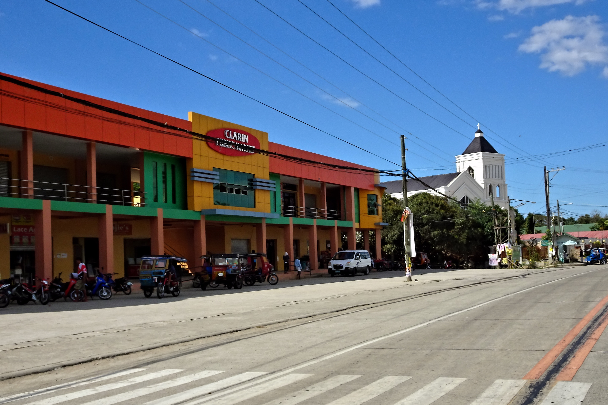

Clarin Bohol History

Clarin is in the northeastern part of Bohol and is 61 kilometers from
Tagbilaran City. It was originally called Can-ogong" after one of the
early settlers named Ogong who had a habit of hanging a bamboo tube for
salted fish. Since he was a poplular man in the community the place was
named after him, Can-ogong, meaning "Ogong's place".
Can-ogong was then changed to Clarin when it was organized as a
municipality in honor of the first Civil Governor of Bohol, Hon. Anecito
Clarin. During World War II, its central school was used by the Japanese
as a concentration camp for suspected persons. It was a "visita" of
Inabaga in 1852 and of Tubigon in 1881. When the town was organized into
a regular municipality on January 31,1919, its name was changed into
Clarin.
It was established as a parish 5 years later. A provisional church was
built and dedicated to St. Michael the Archangel whose feast day falls
on September 29. From 1927 to 1937, for a period of 10 years, the
Recollects administered the parish and then were suceeded by the
seculars During World War II, the town of Clarin was occupied by the
Japanese forces. The town was set free when the Japanese were finally
defeated and Bohol declared liberated on May 25, 1945 by Major General
William H. Arnold Commander of the American Division